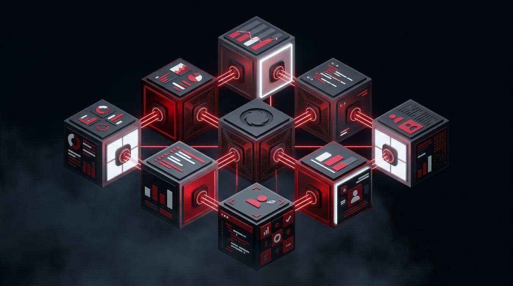

AI 时代的咨询不是售卖工具，而是让每一次投入精准、可控、可持续。我们以自研产品为底，以业务理解为尺，以生态资源为网——连接企业的真实问题与 AI 世界的全部答案。
我们 不是 又一家 AI 公司。 我们是 企业 与 AI 世界 之间的 那根 线 — 懂业务，通工具，连生态。
DigiRepub 不是单一角色——我们同时是 AI 产品的创造者、企业业务的咨询师、AI 生态的连接者。三者互相成就，缺一不可。
自研 8 条 DR 系列产品线——从图像生成、视频生成到主数据治理、工作流介入——每一件都是经真实客户打磨的资产，而非 PPT 上的概念。
从业务流程与痛点出发，反向推导 AI 的介入点。工具永远是手段，企业的问题才是起点——这是 DigiRepub 与"卖 AI 工具的人"的根本区别。
熟悉通义千问、字节豆包、腾讯混元等大厂模型，也深入各类商用小模型与开源微调模型——为客户匹配"最合适"而非"最知名"的方案。
DigiRepub 的咨询围绕企业两类关键人群展开，形成相互联动的双层业务模型。底层赋能员工，顶层规划战略，纵向贯通。
DigiRepub 的咨询能力由真实的产品研发能力背书。每一件 DR 系列产品都经过真实客户打磨，既是商业化资产，也是咨询交付的可组合模块。

AI 咨询不是独立业务线，而是进入企业的战略入口。DigiRepub 以此为起点，逐步延展到内容、营销、数字化等更广阔的合作边界。
Phase 01 · 切入
以 AI 咨询（员工培训 / 业务咨询）作为低门槛、高价值的切入点，建立与企业的信任关系。
Phase 02 · 深耕
以某条 DR 产品线落地为抓手，深入了解企业运营，识别更多合作机会。
Phase 03 · 延展
自然延伸至营销业务、内容生产、数字化项目、长期顾问合作——单客户价值呈指数级增长。
差异化优势不仅在于自研产品，更在于构建了一张可调用的 AI 业界资源网络——大厂、小模型、创业团队、行业专家，随时汇入。
三大能力支柱，构成 DigiRepub 的不可复制性。
8 条已落地的 DR 系列产品线是最直接的能力证明，从内容生成到数据治理到工作流全覆盖。
从大厂大模型到商用小模型、开源微调模型，都有真实场景的落地经验——为客户匹配最合适而非最贵。
大厂与创业团队的双向连接，让 DigiRepub 能为客户找到"最合适"而非"最知名"的方案。
灵活的服务形式覆盖从一次培训到长期顾问的全光谱需求。
| 服务形式 | 交付内容 | 计费 |
|---|---|---|
| AI 工具培训 | 工作坊（DRart / DRvideo 等）、场景化课程、员工答疑陪跑 | 按场次 / 人头 |
| AI 战略咨询 | 业务诊断报告、AI 适配评估、选型建议 | 按项目 |
| DR 系统落地 | DR Forge / Matrix / Nexus 等产品部署与定制 | 实施 + 订阅 |
| 长期顾问 | 月度 / 季度持续陪跑、方案迭代、效果复盘 | 按月 / 年订阅 |
| 资源撮合 | 垂直 AI 能力对接、厂商筛选、合同协助 | 撮合 + 分成 |
| 衍生业务 | 营销、内容生产、数字化项目等扩展业务 | 按原模式 |
从战略蓝图到可执行的落地路线图。
8 条产品线统一 VI、完善手册，形成可销售与授权的标准化资产。
每条 DR 产品线沉淀 2-3 个标杆客户故事，作为提案核心素材。
与至少 3-5 家 AI 厂商或小模型团队建立正式合作关系。